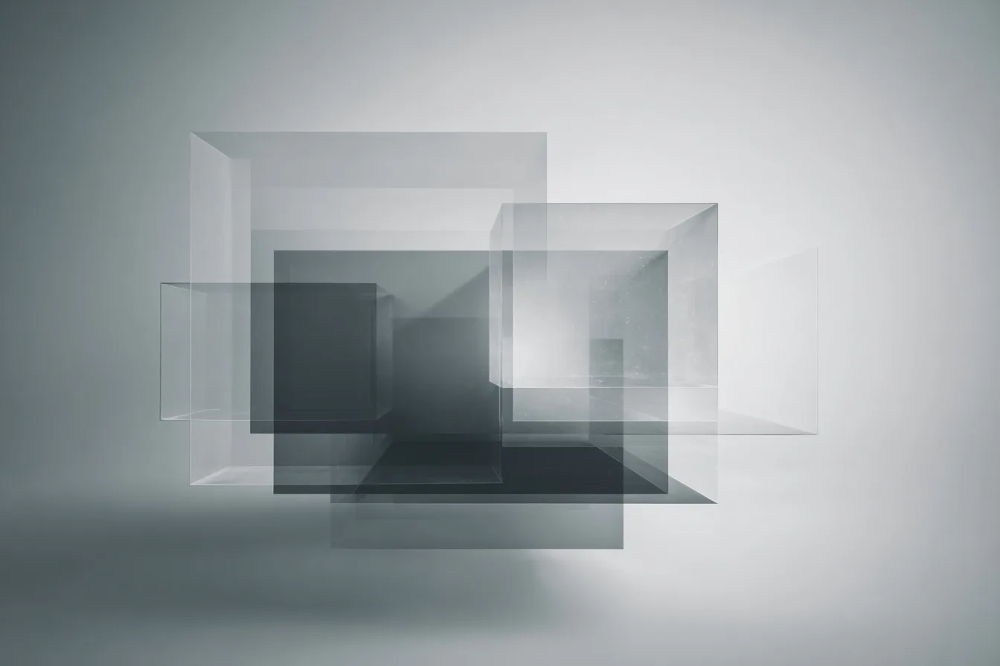

The Mission
"Human-AI interaction is not only a model-output problem."
When users engage in prolonged conversations with AI, contextual hallucinations emerge — not from model errors, but from the interaction itself. These reshape cognition, trust, and self-understanding.
Current safety research focuses on the model side. This work addresses the user side.
— USCH Preprint, 2026
Framework
Four connected layers addressing user-side contextual risk
Seven dimensions for analyzing conversational context risk as a multi-dimensional structure.
System-side contextual operation dimensions with Contextual Coherence Coh(G).
A non-clinical construct describing user-side phenomena emerging through prolonged AI interaction.
Pre-empirical methodology with four-axis scoring (FR, CA, SR, SA) for user-side contextual risk.
Implementation
AI Contextual Signal Matrix
The Executable Layer
A-CSM integrates USCH theory with an executable measurement pipeline. By connecting CXC-7 and CXOD-7 into a four-axis risk scoring system, it provides the first framework that makes user-side contextual risk both measurable and actionable.
Visualization
The USCI scores along four independent axes, each measuring a distinct dimension of user-side contextual risk. Farther from the center indicates a higher-risk contextual region.
Source: USCI Full Specification v1.0.0 (2026)
Library
Direct access to original paper versions. No content rewriting.
Seven dimensions for analyzing conversational context risk as a multi-dimensional structure.

System-side contextual operation dimensions with Contextual Coherence Coh(G).
A non-clinical construct describing user-side phenomena emerging through prolonged AI interaction.
Pre-empirical methodology with four-axis scoring (FR, CA, SR, SA) for user-side contextual risk.
All papers are publicly accessible via Zenodo or SSRN. This site provides direct links to original versions only — no summaries, rewrites, or paraphrased interpretations are provided.
Scope
USCH is a non-clinical research construct, not a psychiatric diagnosis.
USCI is a pre-empirical methodology specification, not for clinical or legal decisions.
This website focuses on public research communication and direct access to original papers.
Connect
For collaboration, replication planning, or interview invitations.
Include institution, objective, and expected timeline.